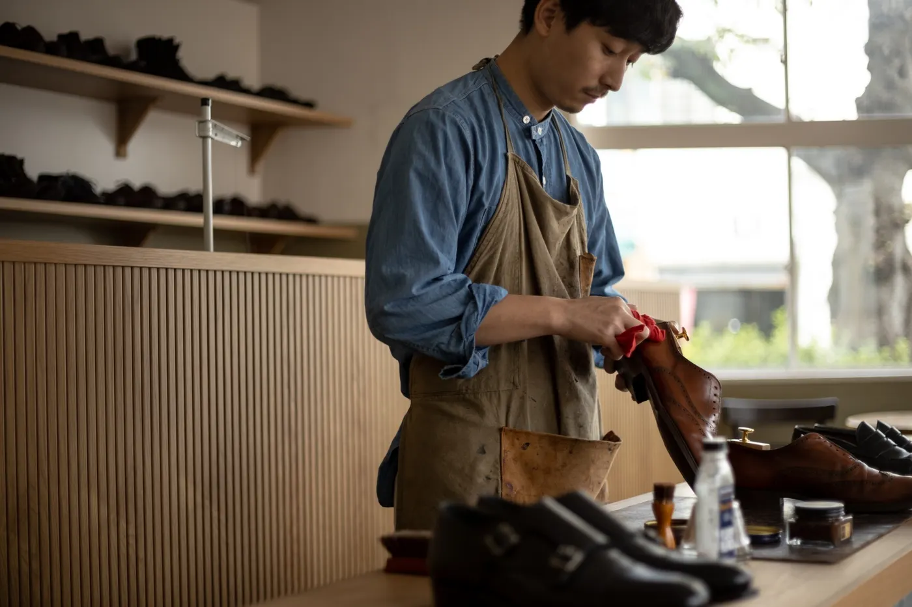

About
ABOUT
名古屋市千種区高見にある靴修理工房。履き慣れた一足を、長く付き合えるかたちへ仕立て直します。
既製靴を、
ビスポークに。
既製靴は、生まれたときはまだ「その人の靴」ではありません。履き込み、直しを重ねるほどに足に沿い、歩き方に馴染み、暮らしのスタイルに寄り添う一足へと育っていきます。
MOGGYS SHOE STUDIO が目指すのは、そんな「既製靴をビスポークに」変えていく修理です。ソールの張り替えやかかとの補修にとどまらず、これからも長く付き合っていける一足に仕立て直すこと。それが、わたしたちの仕事です。
スニーカーも、革靴も、サンダルも。店頭への持ち込みはもちろん、全国からの郵送修理にも対応しています。
- Opened
- 2022.07.07
- Service
- 革靴 / スニーカー / サンダル
- Order
- 店頭持ち込み / 全国郵送

Owner
店主・原の想い
「この靴が、もう少しこうだったらいいのにな」
そんな靴への想いを形にすること。
それが、MOGGYS SHOE STUDIOの考える靴修理です。
既製靴は、多くの人に向けて作られた一足です。
だからこそ、実際に履いていると
「もう少しここがこうだったら」
「ここが気になるな」
と思うこともあると思います。
履き心地を整えること。
デザインを自分らしく変えること。
手入れを重ねながら、長く付き合える一足にしていくこと。
そうやって少しずつ、その人に合った一足になっていく。
「既製靴をビスポークに」
この考えをもとに、修理やレザーケア、カスタマイズなど、一足一足と向き合っています。
ただ直すだけではなく、
その靴をもっと好きになってもらう。
「この靴、もう少しこうだったらいいのにな」
そんな気持ちに応えられる仕事をしていきたいと思っています。
Hara / MOGGYS SHOE STUDIO
Contact
ご相談はこちら
まずは写真を添えてご相談ください。概算のお見積りも可能です。